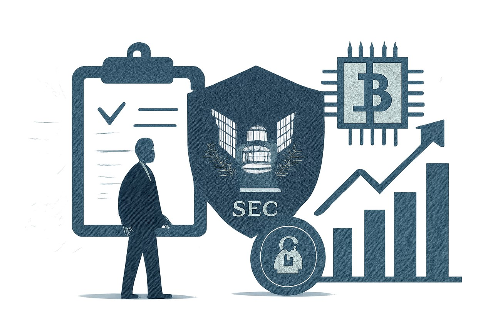

07 미국 증권거래위원회(SEC) 보도일 2026.10.01
SEC, 자문사 가상자산 자체수탁 예외 제안

미국 기관 투자자의 가상자산 수탁 규칙이 다시 손질 단계에 들어갔다. SEC는 기존처럼 적격 수탁기관만 고집하면 실제로 보관이 어려운 자산이 있다고 봤다. 그래서 예외적 자체수탁과 주별 신탁회사 활용을 담은 새 제안을 내놨다.
무슨 일이 있었나
SEC는 허용된 수탁기관이 없을 때 투자자문사Investment adviser — 고객 자산 운용을 자문·관리하는 등록 사업자와 규제 대상 펀드가 제한적으로 가상자산을 자체 수탁할 수 있는 틀을 제안했다. 이 제안은 투자자문사와 등록 투자회사, 사업개발회사에 적용된다.
자체수탁Self-custody — 중개기관 없이 스스로 자산을 보관하는 방식은 자유 선택이 아니라 예외 수단으로 설계됐다. 자문사는 자체수탁에 들어가기 전에 해당 자산을 맡아줄 허용 수탁기관이 없다고 판단해야 한다. 이 판단은 시작 전 한 번만 하면 끝나지 않는다. 자문사는 이후에도 분기마다 다시 점검해야 한다. 제안은 주별 신탁회사State trust company — 미국 주법에 따라 인가받은 신탁회사도 가상자산 수탁기관으로 공식 인정하는 내용도 담았다. 다만 자문사나 펀드는 그 회사가 관련 주 감독기관 인가를 받았는지 직접 확인해야 한다. 서면 정책과 절차가 있는지도 해마다 살펴야 한다. 이 제안은 아직 확정되지 않았다. 연방관보 게재 뒤 60일 동안 의견수렴을 받는다. 최종 규칙 채택 시점은 정해지지 않았다.
왜 지금 나왔나
SEC는 2023년 수탁 규칙 개정안을 냈지만, 가상자산에는 사실상 실행이 어렵다는 비판을 받았다. 당시 안은 자문사에게 적격 수탁기관Qualified custodian — 법령상 고객 자산을 맡을 수 있는 수탁기관 사용을 요구하면서도, 실제로 그런 기관이 가상자산을 맡기 어렵다는 점을 풀지 못했다. SEC는 그 안을 2025년 6월 철회했다. 이번 제안은 그 공백을 메우려는 새 시도다.
규칙의 내용과 적용 범위
이번 제안은 모든 가상자산에 일괄 적용되지 않는다. 연방 증권법상 펀드나 증권에 해당하는 가상자산, 또는 규제 대상 펀드 계정의 증권·유사 투자자산이 대상이다.
자체수탁을 쓰려면 운영 통제가 따라야 한다. 원문에는 전담 주소, 1인 단독 이체 방지 장치, 연간 통제·사이버보안 점검, 독립 회계사 보고, 고객 대상 분기 명세서, 펀드 이사회 감독이 담겼다. 주별 신탁회사를 쓸 때도 고객 자산과 자기 자산의 분리, 도난·손실·오용 방지 절차를 확인해야 한다. 새 제안이 확정되기 전까지는 기존 수탁 규칙이 그대로 적용된다.
국내와의 접점
원문은 국내 적용에 대해 언급하지 않았다.
우리 업무로 옮기면
기관용 디지털 자산 수탁은 지갑 보관 기술만으로 끝나지 않는다. 분기별 재판단, 독립 점검, 고객 명세서, 이사회 보고 같은 통제 흐름을 시스템에 넣어야 한다.
- 검토할 팀: 수탁, 내부통제, 정보보호, 회계, 고객보고
- 선행 과제: 자산별 수탁 가능 여부를 주기적으로 재평가하는 워크플로 설계
- 선행 과제: 1인 단독 이체를 막는 승인 체계 점검
- 확인할 질문: 외부 수탁기관 부재를 어떤 증빙으로 남길지
미국 고객이나 미국 규제권역을 상대하는 사업은 자산 분류가 먼저다. 어떤 토큰이 규칙 대상인지가 달라지면 수탁 경로도 달라진다. 다만 이번 안은 제안 단계라서, 실제 제품 일정이나 운영 모델을 확정 전제로 잡으면 안 된다.
원문 정보
제목: Roller Coaster Ride: Statement on Proposed Adviser and Regulated Fund Custody Rules; Crypto Custody Rules
보도일: 2026.10.01